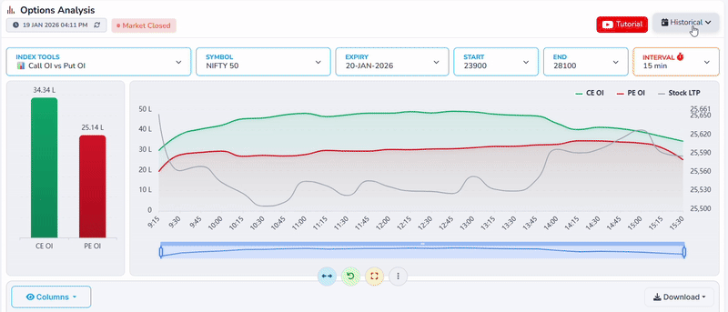
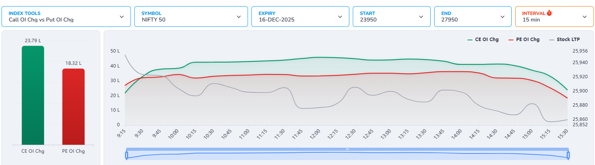
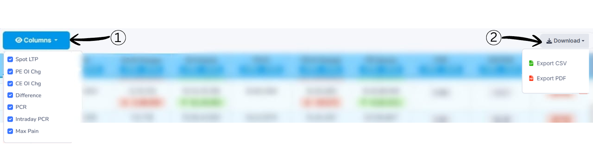
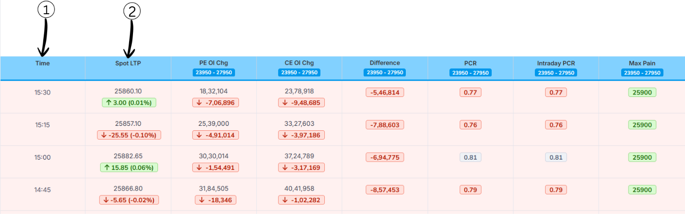
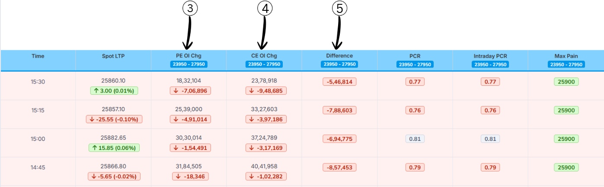
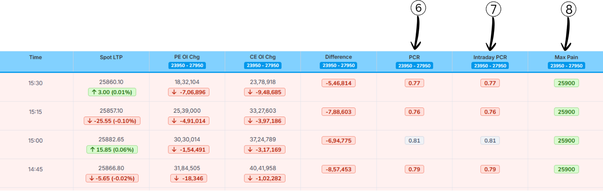

Header
1. Live Status Indicator
The Live Status Indicator shows that the displayed data is real-time market data and is being continuously refreshed It also displays the amount of time passed since the
last data update, helping users understand
how fresh the information is.
2. Last Updated Time
Last Updated Time shows the exact moment when the data on this page was last refreshed. This timestamp helps users verify the recency of the information, ensuring they are making decisions based on the most current market conditions.
Historical Data

The Historical option allows users to select a past date to view data for that specific trading day.
When a historical date is selected, the charts and values update to show how CE OI and PE OI change happened during that day instead of live market data.
This helps users analyze past market behavior, compare different days, and understand how price movement and open interest changed over time.
Header1
1.Index Tools Dropdown
This dropdown allows users to select the type of analysis they want to view,
such as Call OI chg vs Put OI chg, Call OI vs Put OI, or Volume-based analysis.
Once an option is selected, the charts and data update according to the chosen analysis type.
2.Symbol Selection Dropdown
This dropdown lets users choose the market index or symbol
(for example, NIFTY 50, BANK NIFTY, FINNIFTY).
Selecting a different symbol updates the data to show Call OI chg vs Put OI chg
specific to that selected index.
3.Expiry Date Dropdown
This dropdown opens a list of available expiry dates. By selecting a different expiry date, users can view
Call OI chg vs Put OI chg data for that specific expiry,
making it useful for historical and comparative analysis.
Header2
4.Start Strike Price Dropdown
This dropdown allows users to select the starting strike price
for the analysis range.
The data and charts will begin calculating Call OI chg vs Put OI chg
from this selected strike price.
5.End Strike Price Dropdown
This dropdown is used to select the ending strike price
for the analysis.
Together with the start strike, it defines the complete
strike price range included in the analysis.
6.Interval Selection Dropdown
This dropdown lets users choose the time interval
(such as 1 min, 5 min, 15 min, or 30 min) for data calculation.
A smaller interval shows more frequent changes,
while a larger interval provides a smoother and broader market view.
Chart/Graph

Chart Explanation
-
Green Line – CE OI Chg:
Intraday change in Call Open Interest.
When this line rises, it means new call positions are being added during the day.
-
Red Line – PE OI Chg:
Intraday change in Put Open Interest.
When this line rises, it means new put positions are being added during the day.
-
Grey Line – Stock LTP:
Represents the NIFTY spot price movement throughout the session.
OI Change Summary (Left Bar Chart)
- CE OI Chg: ≈ 23.79 L
- PE OI Chg: ≈ 18.32 L
Conclusion:
Since fresh Call OI addition is higher than Put OI addition, it indicates
intraday bullish positioning by option writers in this price range.
Column/Download

1.Columns Selection
The Columns option allows users to enable or disable table columns
based on their preference.
2.Download Options
The Download option lets users export the displayed data
for offline use or record keeping.
Column-1

1. Time
The timestamp when the data was recorded. Each row represents data at different intervals during the trading
day (15:30, 15:15, 15:00, 14:45, etc.).
2.Spot LTP (Last Traded Price)
Nifty 50 last traded price at that time.
The green/red tag below shows how much it changed from the previous interval
and the percentage move.
Column-2

3. PE OI Chg(Put Option Open Interest change)
Net change in put open interest in this strike range compared to the start of the day.
- Positive value: Puts are being added (fresh put positions).
- Negative value (as in this image): Puts are being unwound/closed.
Example (15:30):
PE OI Chg = 18,32,104 with a ↓ of –7,06,896 from the previous reading →
total intraday put buildup is still 18.3L above the morning level,
but 7.06L has been cut since the prior interval.
4. CE OI Chg (Call Option Open Interest change)
Net change in call open interest compared to the start of the day.
- Positive value: Calls being added.
- Negative value: Calls being unwound.
Example (15:30):
CE OI Chg = 23,78,918 with ↓ –9,48,685 →
still large net call buildup on the day,
but heavy profit-booking/unwinding into the close.
5. Difference
Difference shows the net gap between
Put Option Open Interest Chg(PE OI Chg) and
Call Option Open Interest Chg(CE OI Chg) for the selected strike range.
Formula
Difference = PE OI Chg − CE OI Chg
-
Negative value (like –5,46,814 at 15:30) means call change > put change,
so intraday additions are more on the call side.
-
Positive value would mean put change > call change.
This tells you which side is dominating fresh intraday positions.
Conclusion: A negative difference means the call side is stronger,
indicating resistance in that zone.
Column-3

6. PCR
Put–Call Ratio (PCR) is a market‑sentiment indicator that compares how many put options are being traded
(or
are open) to how many call options are being traded (or are open) for the same index or stock. It tells
you
whether traders, as a group, are more focused on protection/downside (puts) or on upside (calls).
Formula of Put–Call Ratio (PCR)
Formula:
Put–Call Ratio (PCR) = Total Put Open Interest ÷ Total Call Open Interest
Example:
- Total Put Open Interest = 24,00,000
- Total Call Open Interest = 20,00,000
Calculation:
PCR = 24,00,000 ÷ 20,00,000 = 1.20
What PCR Values Mean?
| PCR Range |
Market View |
| > 1.2 |
Bullish |
| 0.8 – 1.2 |
Neutral |
| < 0.8 |
Bearish |
7. Intraday PCR
Intraday PCR measures the ratio of today’s put option activity to today’s call option activity within the
trading day. Usually it is calculated using today’s traded volume (or today’s change in OI) of puts
divided by today’s traded volume (or change in OI) of calls for that day. It tells you what traders are
doing right now during the session, not what they have built over many days.
Formula and Difference from Normal PCR
Normal PCR on your NiftyInvest screen uses total PE OI ÷ total CE OI for that expiry
and range.
Intraday PCR uses today’s fresh build-up or volume in PE ÷ today’s fresh build-up or
volume in CE for the same period.
So:
If
Intraday PCR is very high, it means that today more puts are being added or traded
than calls, showing strong fear/bearish hedging intraday (often a contrarian bullish hint if extreme).
If Intraday PCR is very low, it means today traders are aggressively taking call
positions compared to puts, showing intraday bullishness that can become over-optimistic at extremes.
8. Max Pain
Max pain (in options) is the strike price at which option buyers (calls + puts together) would lose the most money at expiry, and option sellers would gain the most.
- If max pain is below the current LTP, it is shown in red (price trading above the max‑pain level).
-
If max pain is above the current LTP, it is shown in green (price trading below the max‑pain level).